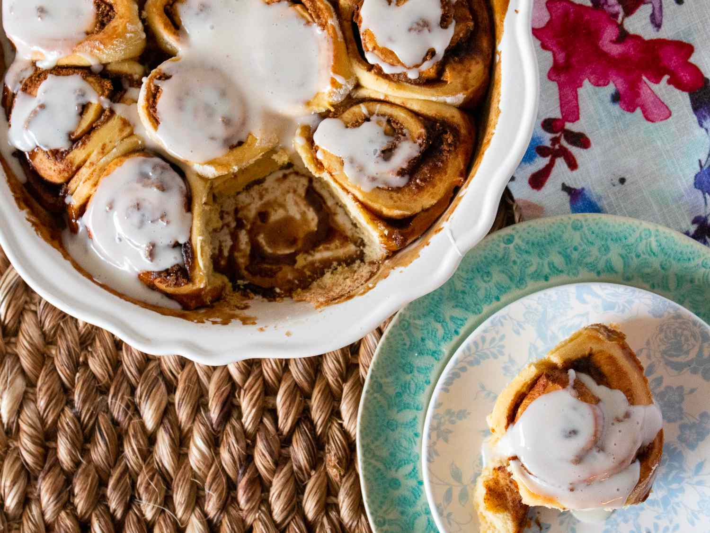

Cinnamon Rolls

Ingredients
- 1 cup milk
- ⅓ cup butter
- 1 (.25 ounce) package active dry yeast
- ½ cup white sugar
- 4 ½ cups all-purpose flour
- 1 teaspoon salt
- 3 eggs
Filling
- ¾ cup brown sugar
- 1 tablespoon ground cinnamon
- ½ cup raisins
Steps
- Cook for 10 minutes
- Use plates, salt and oil
- Put everything in refrigerator
- Eat it
Back To Main Menu